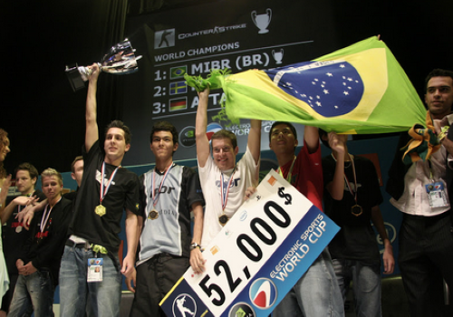

O Major de CS:GO no Rio em 2022
O mundo de competição e-sports é um mundo muito recente, e consiste em competições de diversos jogos eletrônicos (os chamados Games). Tendo cada um suas devidas regras e empresas responsáveis por realizar suas competições.
O Brasil é um país que vem em constante ascensão no cenário de Games competitivos (os chamados e-sports). O primeiro título mundial de e-sports da história do Brasil foi um título individual em 2002 no jogo “Magic: The Gathering”, com o jogador Carlos “Jaba”, que faturou o título mundial não só nessa ocasião, como também em 2010. A primeira equipe brasileira a conquistar um título mundial coletivo foi a MIBR em 2006, no jogo “Counter-Strike 1.6” vencendo a poderosa Fnatic, na final da Electronic Sports World Cup (ESWC). A equipe era formada pelos seguintes jogadores: Bruno "bit", Lincoln "fnx", Renato "nak", Raphael "cogu" e Carlos "KIKO". Na ocasião, os brasileiros derrotaram os suecos por 16 a 6.